Policy administrators were navigating XDS structures and raw XML to manage identity rules — a fragmented, modal-heavy system that blocked self-service and demanded consulting support for everyday tasks. I led research and design to move from that complexity to a single pane of glass policy editor canvas, validated with enterprise customers at OpenText World 2025.
Role: Principal Product Designer — research, usability testing, design direction, and cross-functional influence across Engineering, Product, and Go-to-Market.
Administrators were navigating XDS structures and raw XML to manage policies — a fragmented, modal-heavy interface that demanded deep technical expertise and blocked self-service. Every change meant consulting support.
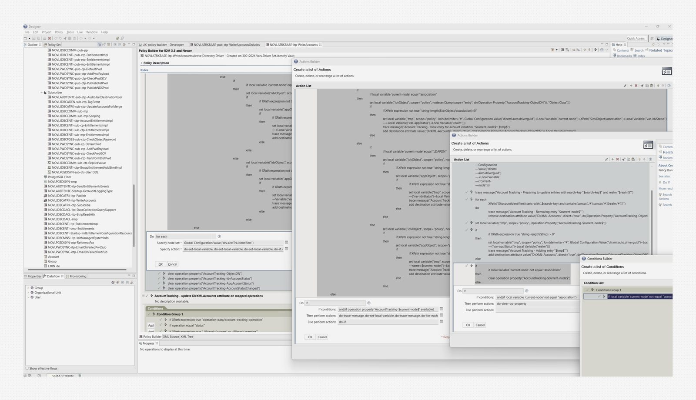
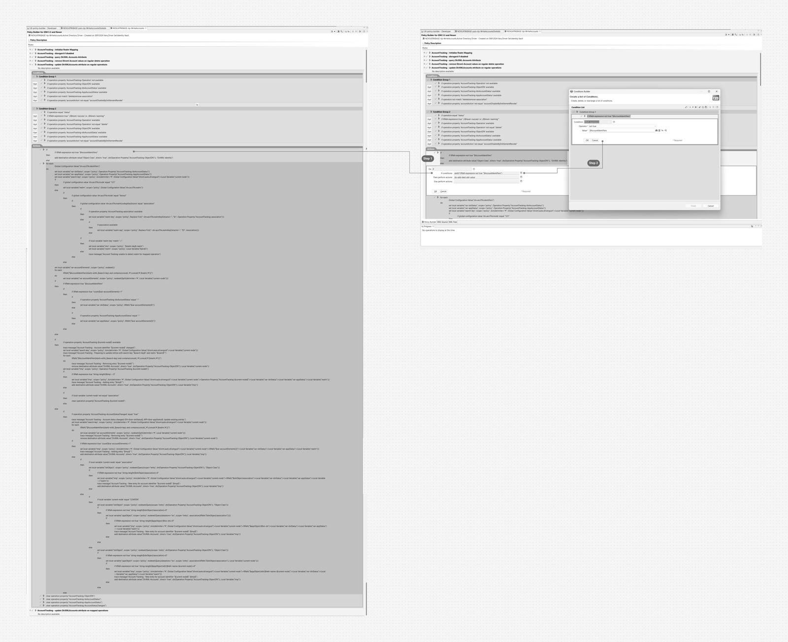
Before sketching anything, I mapped the full lifecycle of a policy administrator — where they got stuck, where they gave up, and where the system forced them to call for help.
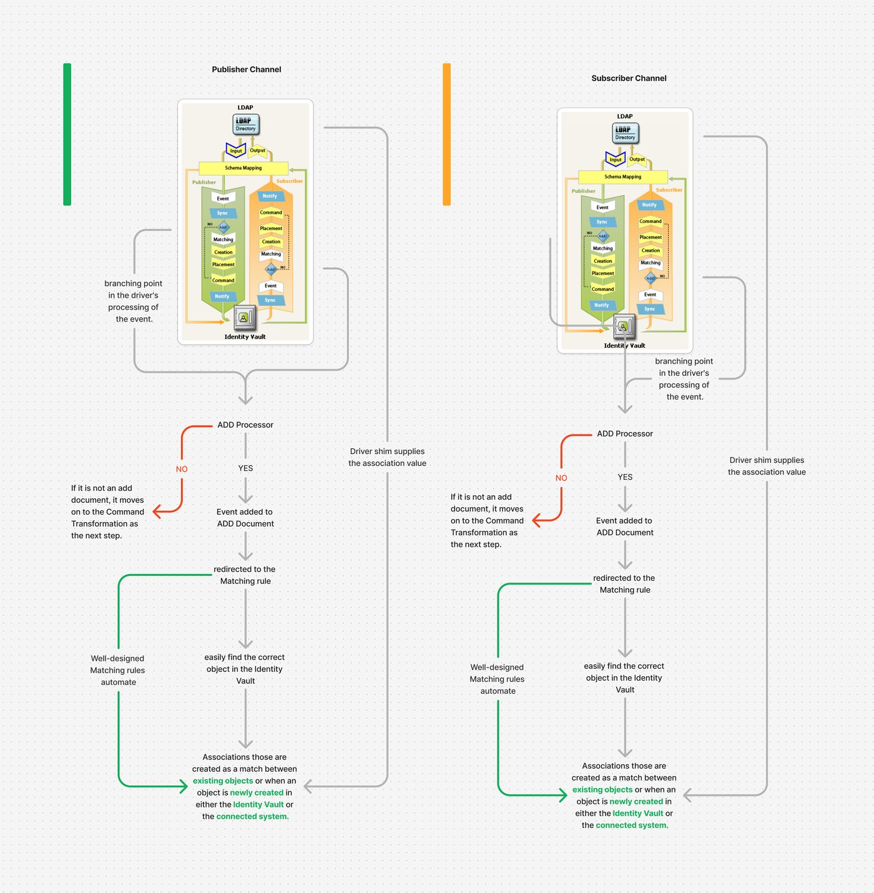
The core tension: power users needed XML access, but the interface forced everyone through it — regardless of skill level.
Research surfaced a clear primary user — the Application Administrator managing Active Directory Driver policies within NetIQ Identity Manager. Not a casual user: someone who lives in this system daily and feels every rough edge.
Editing rules and conditions via the XML editor is cumbersome and relies heavily on consulting support — users cannot make direct edits without external help.
Managing existing policies demands technical depth. Errors disrupt synchronisation and cause data inconsistencies — the cost of a wrong edit is high.
Condition sets span multiple layered modals, adding navigation complexity. Users lose context mid-task and struggle to manage policies end-to-end.
There is no GUI-based view for side-by-side comparison. Rules cannot be easily edited, compared, or updated without creating technical dependencies.
I sketched before touching pixels. These are raw — intentionally. Fast, throwaway thinking to explore the structure of a visual policy canvas before committing to any direction.
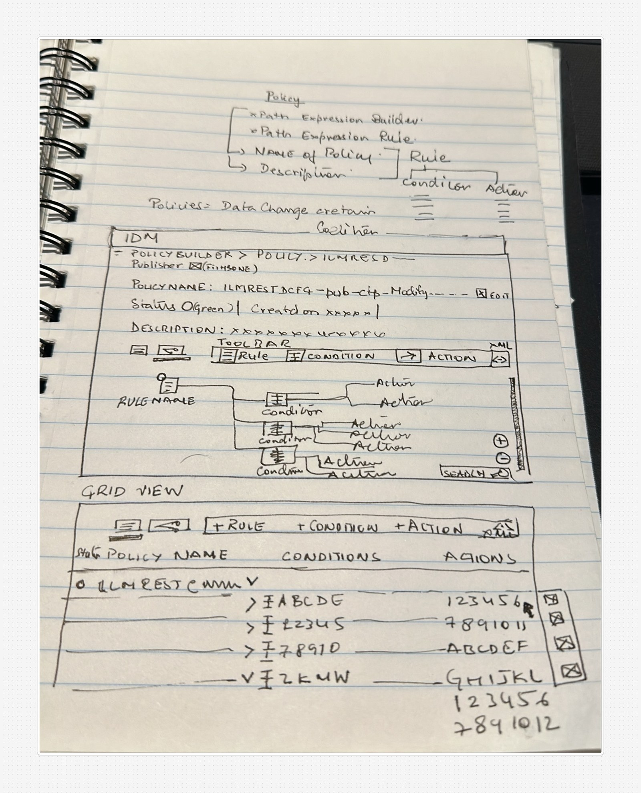
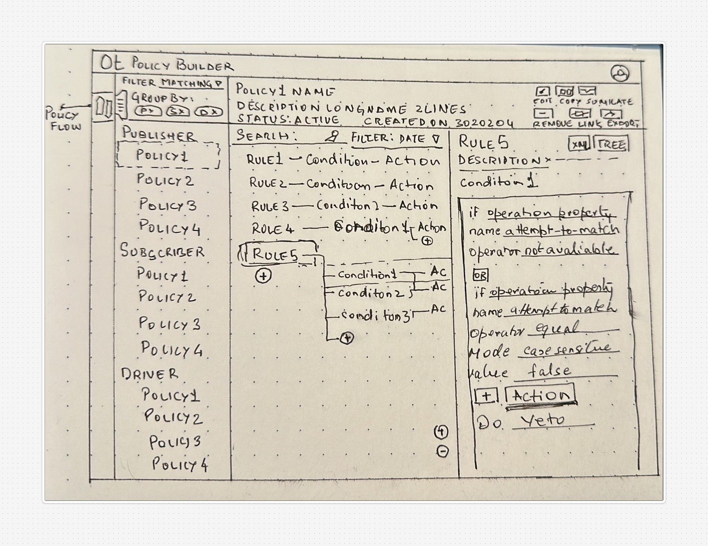
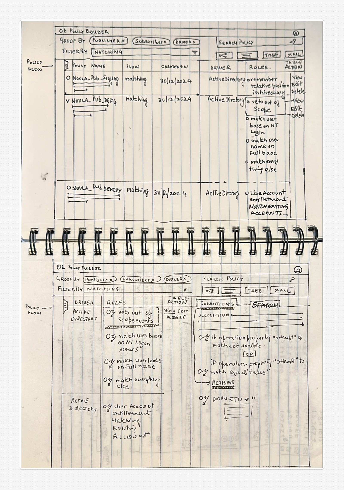
One unified workspace to replace five fragmented screens. The Canvas View emerged as the single pane — rules, conditions, and actions in one place.
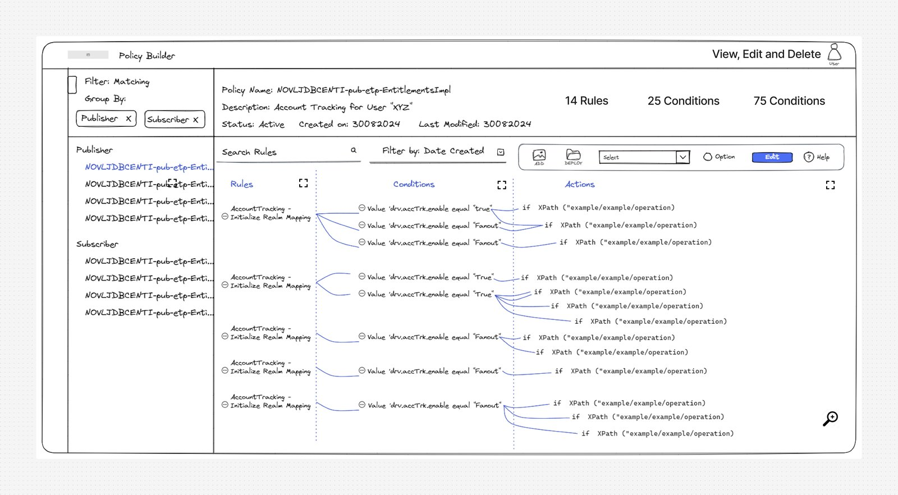
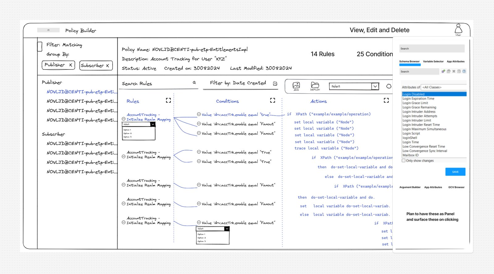
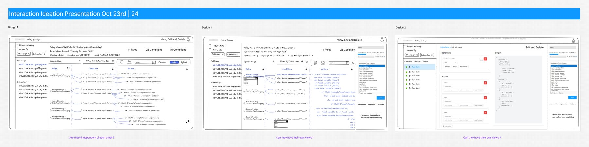
From sketch to flow — defining how a user moves through rule creation without ever touching XML unless they choose to.
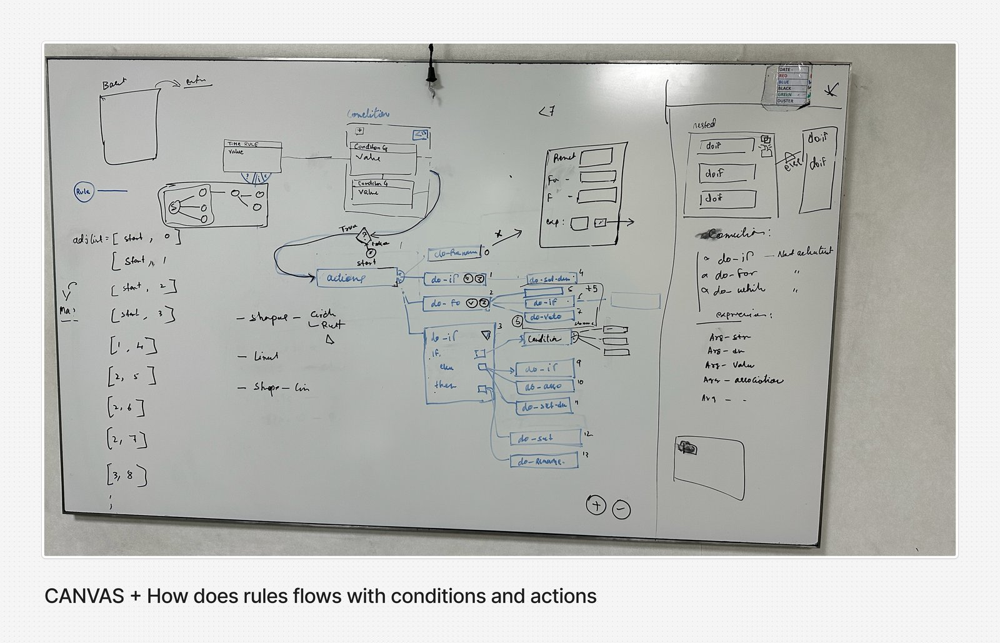
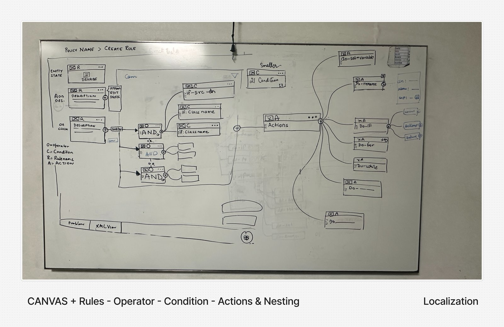
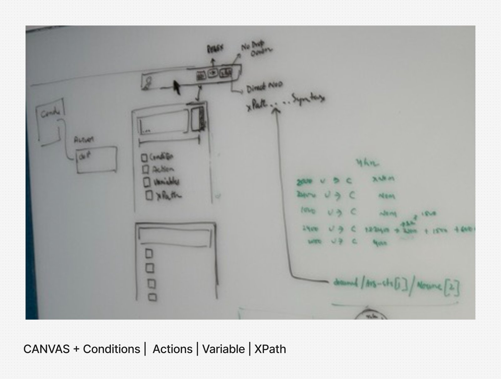
The idea was simple and radical: the user never leaves the canvas. Select a node — it highlights. Add conditions, build actions, edit rules — all in place, without a single modal interrupting flow. The policy structure stays visible at all times, so administrators always know where they are and what they're changing. A single pane of glass to build and edit policies end-to-end.
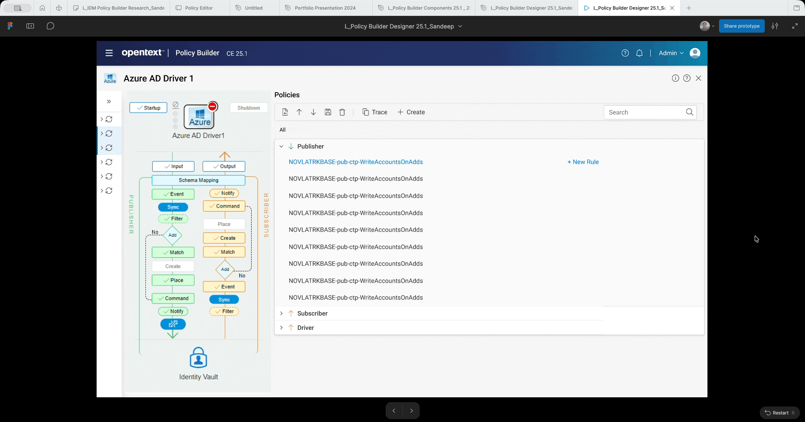
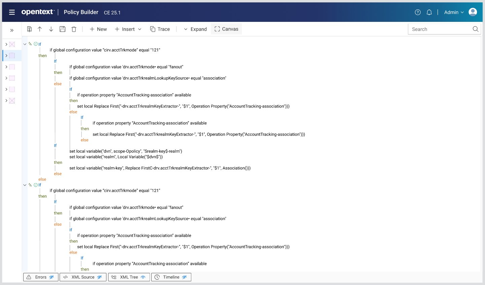
Tested with 9 enterprise participants at OTW2025 Innovation Lab in Nashville. The redesigned flow mapped cleanly to how administrators actually think about policy management.
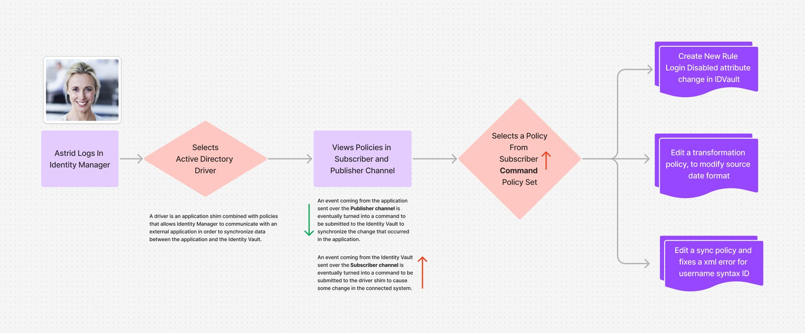
"I'm really excited for this to go live. This blows the socks off IDM."— Partner, TriVir · OTW2025 Innovation Lab
"Oh, snap. Oh, wow. I was not expecting that — that's great... That's pretty slick."— Enterprise participant reacting to Pseudo Code View
"It was a pleasure to work with Sandeep in preparing the Identity Lifecycle Manager Policy Builder usability test for this year's Innovation Lab at OTW2025... As a result of Sandeep's contributions, the test and preparations ran very smoothly. We were able to collect feedback from 9 customers and partners during the Lab. All of these participants left feeling very happy to impact product designs through their feedback."
— Shane Melton, Product Leadership Team · OTW2025 Innovation Lab ReportFull Case Study
The complete PDF includes all iterations, usability test methodology, participant data, and the full design rationale.
I'm always happy to discuss design process, enterprise research methodology, or how I approach complex UX challenges.
Enter the password to download the full PDF with wireframes and research findings.